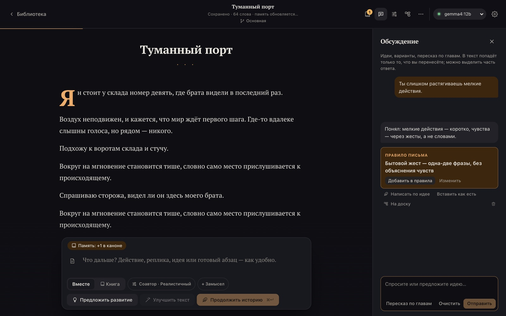
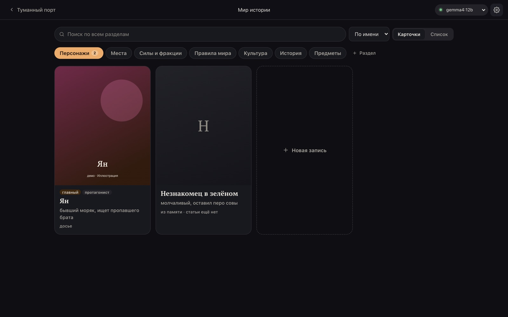
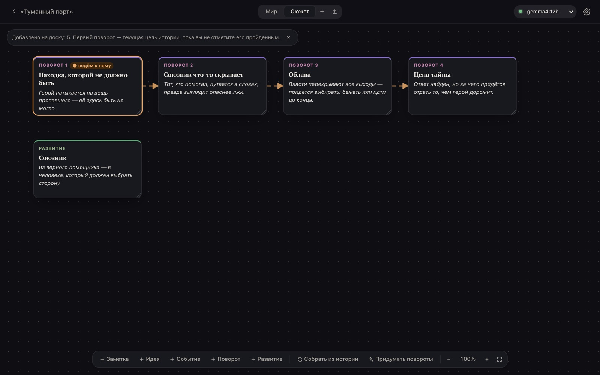

Вы делаете ход, ИИ пишет прозу
Напишите ход как удобно: действие, реплику, набросок или «пусть начнётся дождь». В ответ придёт литературный фрагмент. Это черновик: в историю он попадёт, только когда вы нажмёте «Принять».
ИИ не решает за вашего героя. Приложение проверяет черновик и предупреждает, если он написал реплику или поступок за героя.
«Вместе»
Вы ведёте героя, ИИ пишет мир и последствия.
«Книга»
ИИ сам пишет главу из нескольких частей, вы читаете и направляете.
«Обсуждение»
Чат об истории, удачные идеи переносятся в текст.
Нейросеть пишет так, как вы просите
Выберите стиль или покажите образец своего текста. Настройте лицо и время, тон, рейтинг и приёмы драматургии.
Если ИИ раз за разом делает что-то не так, скажите ему об этом в обсуждении. Он предложит правило письма и будет соблюдать его дальше.

ИИ помнит мир и персонажей
Он сам запоминает факты, героев и открытые линии. В «Мире истории» лежат досье, места, правила мира и отношения: что там записано, он держит при письме, что удалено, забывает.
Мир можно написать в любом редакторе и загрузить одним файлом .md.

Замысел лежит на доске
Разложите повороты сюжета, развитие персонажей и заметки. ИИ ведёт историю к следующему повороту, а «Придумать повороты» предложит план.
Холст из Obsidian переносится на доску или сразу становится основой новой истории.

И ещё
- Ветки «а что если»
- Главы и их пересказы
- Заметки автора, которые ИИ не видит
- Экспорт в EPUB, Markdown и страницу для печати в PDF
- Архив истории для переноса на другой компьютер
- Автоматические копии раз в день
- Светлая и тёмная темы
- Встроенное руководство на русском
Скачать ECHO WORLD
| Система | Файл | Размер |
|---|---|---|
| macOS 13 и новее, Apple Silicon и Intel | Скачать .dmg | 11 МБ |
| Windows 10 и 11, 64 бит | Скачать установщик .exe | 4 МБ |
| Linux x86_64 | AppImage или .deb | 80 МБ или 6 МБ |
Модель скачивается отдельно, это ещё 3–8 ГБ. Контрольные суммы и все файлы — на странице релиза.
Как начать
- Скачайте файл для своей системы.
- Установите. Бета не подписана, поэтому macOS и Windows один раз предупредят. Что ответить на каждой системе.
- На главном экране в карточке «Подготовим модель» нажмите «Запустить Ollama», затем «Скачать». Загрузка модели займёт от 5 до 30 минут.
- Нажмите «Создать первую историю». Дальше поможет руководство.
Что нужно компьютеру
| Минимум | 8 ГБ памяти и около 5 ГБ на диске. Без видеокарты фрагмент пишется минуту-две |
|---|---|
| Чтобы писать хорошо | Mac на Apple Silicon с 16 ГБ или видеокарта NVIDIA с 12 ГБ, около 10 ГБ на диске |
| Ollama | Бесплатная программа, которая запускает нейросеть. Приложение подскажет, где её взять |
Что с вашими текстами
Истории хранятся только на вашем компьютере. Нейросеть работает локально через Ollama, тексты никуда не отправляются. Приложение не собирает статистику.
В интернет оно выходит только за моделью по вашей кнопке, а к другому компьютеру с ИИ или ComfyUI в домашней сети подключается, только если вы сами это настроите.
Частые вопросы
Это бесплатно?
Да, ECHO WORLD бесплатен на время тестирования, аккаунт не нужен. Исходный код закрыт.
Нужен ли интернет, чтобы писать?
Нет. Интернет нужен один раз, чтобы скачать модель. Дальше всё работает на вашем компьютере.
Какая нейросеть пишет текст?
Открытая модель, которая запускается через Ollama. Приложение предложит подходящую: gemma3:4b на 3,3 ГБ для компьютеров послабее или gemma4:12b на 8 ГБ, которая пишет заметно лучше. От модели зависит и качество текста: компактная иногда сбивается.
Можно ли написать целую книгу?
Да. Историю можно вести по главам, в режиме «Книга» ИИ сам пишет главу из нескольких частей, а готовый текст сохраняется в EPUB, Markdown или страницу для печати в PDF.
Чем это отличается от чата с нейросетью в браузере?
Текст не уходит с вашего компьютера. ИИ помнит мир и персонажей всей истории, не решает за героя, а в текст попадает только то, что вы приняли.
Что пока работает не идеально?
Приложение не подписано, поэтому система при первом запуске просит разрешения. Автообновления нет. Видеокарты AMD не распознаются, большую модель для них выбирайте сами. Версия для Linux проверена пока только автоматически.
Куда писать об ошибках?
Сообщите об ошибке или предложите идею на GitHub, для этого нужен аккаунт.